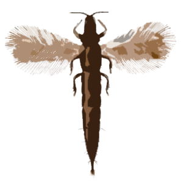

Личинки та гусениці
Лічинки і гусениці — це молоді стадії розвитку багатьох комах, зокрема метеликів і жуків. Лічинки, як-от черв'яки, можуть завдавати шкоди рослинам, поїдаючи їх коріння або листя, що веде до зниження врожайності. Гусениці, що є стадією розвитку метеликів, також відомі своїми руйнівними звичками, адже вони можуть швидко знищувати посіви, поїдаючи зелену масу. Оскільки лічинки і гусениці часто мають високий темп розмноження, їх популяції можуть швидко зростати, що робить контроль над ними важливим для захисту рослинництва та збереження екосистем.
Грибний комарик

Опис: Грибний комарик — маленька комаха, личинки якої живуть у ґрунті та вражають гриби, завдаючи їм шкоди.
Поширення в Україні: Зустрічається в лісових зонах та на полях, де ростуть гриби.
Тріпса
Опис: Тріпса — дрібна комаха, яка живиться соком рослин і пошкоджує їх, залишаючи світлі плями на листках.
Поширення в Україні: Розповсюджена по всій території, часто зустрічається на овочевих та квіткових рослинах.